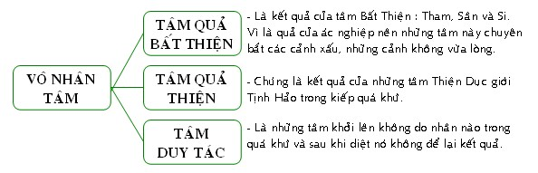
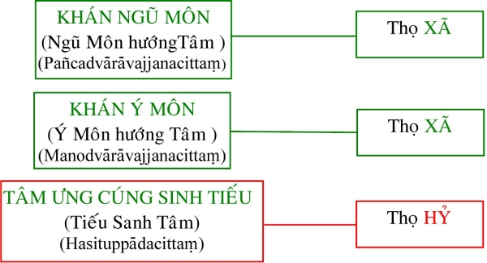
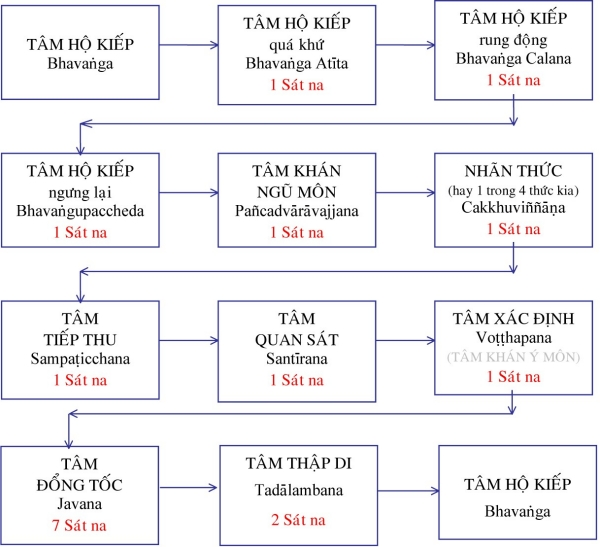
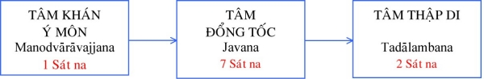
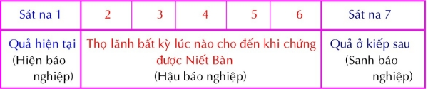

|
PHẬT GIÁO NGUYÊN THỦY THERAVÀDA VI DIỆU PHÁP BAN HOẰNG PHÁP |
|
BuddhaSasana Home Page |
Vietnamese, with Unicode VU Times or CN-Times font |
|
|
PHẬT GIÁO NGUYÊN THỦY THERAVÀDA VI DIỆU PHÁP BAN HOẰNG PHÁP |
|
Xin lưu ý: Cần có phông UnicodeViệt-Phạn VU Times hay CN-Times cài vào máy để đọc các chữ Pàli. |
||||
|
BÀI 6. TÂM VÔ NHÂN 1. Ðịnh nghĩa: Ahetukacittaṃ là sự biết cảnh không có bản chất ác xấu (bất thiện) hay tốt đẹp (tịnh hảo). Nhân (Hetu) có 2 loại 1) Nhân sanh (Uppattahetu): là nguyên nhân làm phát sanh pháp hữu vi; tất cả tâm, sở hữu tâm và các sắc pháp đều có nhân sanh. 2) Nhân tương ưng (Samyuttahetu): là cội rể của các pháp thiện hay bất thiện. Nhân tương ưng gồm có sáu nhân sau đây: Tham: sự ham muốn. Tâm vô nhân ở đây là những tâm không có nhân tương ưng đồng sanh và hòa hợp (thật ra nhân tương ưng của chúng đã xảy ra một lúc nào đó trong kiếp quá khứ vì tất cả các pháp hữu vi khi sinh khởi lên đều có nhân trợ tạo). 2. Phân loại:  2.1) Tâm quả vô nhân (Ahetukāvipākacitta): là những tâm thành tựu do những nhân thiện hay bất thiện đã gây ra trong kiếp quá khứ. (a)Tâm Quả Bất Thiện Vô Nhân (Ahetukākusala vipākacitta): là những tâm thành tựu bởi Nghiệp Bất Thiện (Tham, Sân, Si) trong kiếp quá khứ, vì là quả của ác nghiệp nên những tâm này chuyên bắt các cảnh xấu. Tâm quả bất thiện vô nhân gồm có 7 loại là: Nhãn thức quả bất thiện thọ xã (Upekkhāsahagataṃ Cakkhuviññāṇaṃ): là cái biết của mắt khi bắt cảnh sắc xấu (thấy những cảnh không hợp ý). Nhĩ thức quả bất thiện thọ xã (Upekkhāsahagataṃ Sotaviññāṇaṃ): là cái biết của tai khi nhận thức cảnh thinh xấu (nghe những tiếng không vừa lòng). Tỷ thức quả bất thiện thọ xã (Upekkhāsahagataṃ Ghānaviññāṇaṃ): là cái biết của mũi khi gặp cảnh khí xấu (phải ngữi những mùi khó chịu). Thiệt thức quả bất thiện thọ xã (Upekkhāsahagataṃ Jivhāviññāṇaṃ): là cái biết của lưởi khi nhận thức cảnh vị xấu ( nếm những vị chua, cay, mặn, ... ăn những thức ăn không hợp khẩu). Thân thức quả bất thiện thọ khổ (Dukkhasahagataṃ Kāyāviññāṇaṃ): cái biết của thân khi nhận thức cảnh xúc xấu (những va chạm không hợp với thân gây đau đớn, khó chịu, quá nóng, quá lạnh, ... ). Tâm tiếp thâu quả bất thiện thọ xã (Upekkhāsahagataṃ Sampaṭicchanacitta): là sự thu nhận năm cảnh Sắc, Thinh, Khí, Vị, Xúc mà 5 thức thuộc quả bất thiện vừa ghi nhận, đưa vào tâm thức để tâm quan sát khởi lên. Tâm quan sát quả bất thiện thọ xã (Upekkhāsahagataṃ Santīrānacitta): là tâm xem xét năm cảnh xấu mà tâm tiếp thu vừa ghi nhận. (b) Tâm Quả Thiện Vô Nhân (Ahetukakusalavipākacitta): là những tâm vô nhân thành tựu bởi những tâm Thiện trong kiếp quá khứ (tức những nghiệp thiện đã làm). Những Tâm này chỉ là một phần của các loại tâm quả thiện trong Dục giới (vì còn 8 tâm quả trong Dục giới Tịnh hảo). Tâm quả thiện vô nhân gồm có 8 tâm như sau: Nhãn thức quả thiện thọ xã (Upekkhāsahagataṃ Cakkhuviññāṇaṃ) 2.2) Tâm Duy Tác Vô Nhân (Ahetukakriyācitta): là những tâm chỉ có hành động. Chúng không do nhân nào trong kiếp quá khứ sanh, và sau khi diệt đi chúng cũng không để lại kết quả. Chúng chỉ là những phản ứng máy móc của tâm khi bị kích thích đến mà thôi. Tâm khán ngũ môn (Pañcadvārāvajjanacitta): còn gọi là Ngũ môn hướng tâm. Là tâm hướng đến 5 cảnh Sắc, Thinh, Khí, Vị, Xúc; khi 5 cảnh này xuất hiện chi phối tâm hộ kiếp (tâm Hữu phần). Tâm khán ngũ môn là tâm khai mỡ lộ ngũ môn để ngũ song thức phát sanh. Tâm khán ý môn (Manodvārāvajjanacitta): còn gọi là Ý môn hướng tâm. Là tâm làm nhiệm vụ xác định (Voṭṭhapana) cảnh pháp và khai mỡ cho tâm đổng tốc (tâm tốc hành - Javana) sinh khởi. Do đó tâm này còn được gọi là " tác ý thành thực đổng tốc ". Tâm Ưng Cúng Sinh Tiếu (Hasituppādacitta): còn gọi là Tiếu sanh tâm. Là tâm sai khiến cách cười của vị A-La-Hán. Nụ cười này do phản ứng tự nhiên chớ không có hàm ý, suy xét gì cả.
TÂM DỤC GIỚI VÔ NHÂN DUY TÁC 
3. Hành sự: Tâm vô nhân phần lớn là những tâm làm việc theo khuynh hướng máy móc của tâm (chỉ biết tiếp nhận cảnh mà không có khả năng tạo nghiệp). Nên cần phải nhận rõ hành sự của từng tâm mới hiểu được các khía cạnh của nó. 1) Cặp nhãn thức luôn luôn làm việc thấy tức là nhận thức cảnh sắc. 2) Cặp nhĩ thức luôn luôn làm việc nghe tức là nhận thức cảnh thinh. 3) Cặp tỷ thức luôn luôn làm việc ngữi tức là nhận thức cảnh khí. 4) Cặp thiệt thức luôn luôn làm việc nếm tức là nhận thức cảnh vị. 5) Cặp thân thức luôn luôn làm việc đụng (va chạm) tức là nhận thức cảnh xúc. 6) Cặp tiếp thâu luôn luôn làm việc tiếp thu tức là tiếp nhận cảnh ngũ do ngũ song thức vừa ghi nhận để chuyển lại cho tâm quan sát. Như vậy tâm này làm trung gian như người đưa tin vậy. 7) Tâm quan sát quả bất thiện làm tất cả năm việc là: a- Việc tục sinh tâm này làm việc tục sinh cho chúng sinh
khổ. 8) Tâm quan sát quả thiện cũng làm tất cả năm việc như tâm quan sát quả bất thiện chỉ khác là tâm này bắt cảnh tốt và làm việc tục sinh, hộ kiếp, tử cho người lạc. Riêng tâm quan sát thọ hỷ chỉ làm hai việc: thập di và quan sát mà thôi. 9) Tâm khán ngũ môn chỉ làm một việc là việc khán môn tức là xem xét 5 cảnh khi năm cảnh này vừa hiện đến để khai mỡ cho lộ ngũ môn sanh lên. Tâm khán ngũ môn được ví dụ như người gát cửa có phận sự mỡ cửa cho khách vào 10) Tâm khán ý môn làm hai việc: a- Khán môn: tâm này khai mỡ cho lộ ý sanh khởi. 11) Tâm Ưng Cúng Sinh Tiếu: chỉ làm một việc đổng tốc tức là tâm xử sự với cảnh mà thôi. Muốn nắm rõ về các tâm vô nhân và hành sự của những tâm nầy, ta cần khảo sát sơ qua về lộ tâm, vì tâm vô nhân, phần lớn là những tâm có khuynh hướng máy móc trong lộ trình diễn tiến của tâm thức. LỘ NGŨ MÔN 
LỘ Ý MÔN 
1) Tâm Hộ Kiếp: là tâm chủ quan gìn giữ kiếp sống khi không bị cảnh giới kích thích tới (phần tiềm thức). 2) Tâm Hộ Kiếp quá khứ: là tâm chủ quan (tâm hộ kiếp) sanh diệt đồng thời với cảnh hiện đến nhưng chưa bị cảnh chi phối. Hiện tượng nầy kéo dài trong 1 tâm sát na. 3) Tâm Hộ Kiếp rung động: là trạng thái tâm chủ quan bị cảnh mới chi phối. Kéo dài 1 tâm sát na. 4) Tâm Hộ Kiếp ngưng lại: hay tâm hộ kiếp dứt dòng là tâm chủ quan chấm dứt để nhường chỗ cho tâm khách quan khởi lên ghi nhận và xử sự với cảnh mới. Kéo dài 1 tâm sát na. 5) Tâm Khán Ngũ Môn: là tâm khách quan, khởi lên trong 1 tâm sát na, hướng về đối tượng tức cảnh mới. 6) Ngũ Song Thức: tùy theo đối tượng, một trong ngũ song thức tương ứng sẽ khởi lên trong 1 tâm sát na để bắt lấy cảnh. 7) Tâm Tiếp Thâu: là trạng thái của tâm khi tiếp thu cảnh ngũ mà ngũ song thức vừa ghi nhận. Khởi lên trong 1 tâm sát na. 8) Tâm quan sát: là trạng thái tâm khi điều tra đối tượng (nhận xét), khởi lên trong 1 tâm sát na để xem xét cảnh ngũ mà tâm tiếp thâu vừa ghi nhận. 9) Tâm Phân Ðoán: là tâm xác định khởi lên trong 1 tâm sát na để biết đối tượng (như đẹp, xấu, thơm, ngon, cứng, lạnh, ...) do sự so sánh với những kinh nghiệm đã được ghi nhận trong tiềm thức (hộ Kiếp). Chính tâm khán ý môn làm công việc phân tách nầy. 10) Tâm Ðổng Tốc: tâm này hiện khởi trong 7 tâm sát na để xử sự với đối tượng. Tâm này còn được gọi là tâm hưởng cảnh. Chính đây là giai đoạn quan trọng nhất trong lộ trình tâm vì chính tâm đổng tốc là tâm tạo ra nghiệp thiện hay bất thiện Tùy theo thời điểm tạo nghiệp trong lúc tâm Ðổng tốc khởi lên, sinh ra các thời điểm thọ quả như sau:  11) Tâm Thập Di: là trạng thái tâm hưởng cảnh dư của tâm đổng tốc nhưng không có khả năng tạo nghiệp vì những tâm làm công tác Thập Di hoàn toàn là những tâm quả. Khởi lên trong 2 tâm sát na Riêng lộ ý vì bắt cảnh tự khởi trong tâm thức nên lộ ý chỉ hiện khởi trong 10 tâm sát na. Ðể rõ hơn về hành sự của những tâm vô nhân, ta hảy quan sát lộ trình tâm qua năm căn với thí dụ sau đây: Một người nằm ngủ dưới gốc cây xoài, một trái xoài rớt xuống và lăn đến bên mình người ấy. Người ấy giựt mình ngồi dậy và tìm biết cái gì đã làm mình giựt mình thức giấc. Người này thấy trái xoài, lượm lên, ngửi và xem xét trái xoài. Biết trái xoài đã chín, người ấy ăn trái xoài. Khi ăn xong, người ấy còn cạp thêm vài cái mới bỏ hột xoài ra và nằm xuống ngủ tiếp. - Người đang ngủ" chỉ cho trạng thái thụ động của tâm thức, đang trôi chảy không có gì làm giao động, trạng thái này gọi là Hộ kiếp (Bhavaṅga) hoặc Hữu Phần hay tiềm thức. - Ngồi dậy và tìm biết cái gì đã làm mình thức giấc" chỉ cho trạng thái muội lược của tâm thức, khi tâm thức đang tìm xem ngoại trần kích thích mình thuộc về mắt, tai, mũi, lưỡi hay thân. Tâm này gọi là tâm Khán Ngũ Môn (Pañcadvārāvajjana) hay Ngũ Môn Hướng tâm. - "Thấy trái xoài" chỉ cho sự sanh khởi của thức hoặc thuộc về mắt, hoặc thuộc bốn căn khác. Thức này hoàn toàn thuần túy, không có một chút suy tư gì cả (thọ Xã). - "Lượm trái xoài" chỉ cho trạng thái của tâm thức, lảnh thọ sự kích thích của ngoại vật. Tâm này gọi là tâm Tiếp Thâu (Sampaticchana) hay tiếp thọ tâm. - Ngữi và xem xét trái xoài" chỉ cho trạng thái của tâm thức suy nghĩ và tìm hiểu đối tượng bằng những kinh nghiệm quá khứ của mình. Tâm này gọi là tâm Quan Sát (Santīrana) hay Suy Ðạc tâm. - "Xác định trái xoài đã chín" chỉ cho tâm thức xác định vị trí của đối tượng theo sự hiểu biết của mình. Tâm này gọi là tâm Phân Ðoán (Voṭṭhapana) hay tâm Xác Ðịnh. - "Ăn trái xoài" chỉ cho tâm thức xử sự với đối tượng. Ðây là trạng thái tâm thức quan trọng nhất, chính nghiệp thiện hay bất thiện được thành đạt ở thời điểm này. Tâm này được gọi là tâm Ðổng Tốc (Javana) hay Tốc Hành tâm. - "Cạp thêm vài cái" chỉ trạng thái tâm thức tiếp tục đối xử với cảnh còn lại, trạng thái này giống như tâm Ðổng Tốc nhưng không có khả năng tạo quả nên được gọi là tâm Thập Di (Tadālambana) hay Ðồng Sở Duyên tâm. - Nằm ngủ tiếp" chỉ trạng thái của tâm thức sau khi lộ trình tâm chấm dứt, trở về lại với trạng thái Hộ Kiếp. Với lộ trình tâm ngang qua ý môn thì đối tượng không phải từ bên ngoài vào mà chính tự nội tâm khởi lên. Lộ tâm này khởi từ tâm Khán Ý Môn (Manodvārāvajjana) hay còn được gọi là Ý Môn Hướng tâm và khởi ngay vị trí tâm phân đoán trong lộ tâm ngang qua ngũ môn. 4. Nhân sanh: A) Nhân sanh của ngũ song thức: Cặp nhãn thức, cặp nhĩ thức, cặp tỷ thức, cặp thiệt thức và cặp thân thức, khi sanh lên cần có bốn yếu tố sau: Vật: là Sắc Thần Kinh, chỗ nương của tâm, như mắt là nơi nương của nhãn thức. Cảnh: là đối tượng của tâm. Bất cứ tâm nào, khi khởi lên cũng phải có cảnh tượng ưng với nó. Ðiều kiện để tâm và vật thâu bắt cảnh: là điều kiện tạo sự xúc chạm giữa thức và vật. Như ánh sáng là điều kiện để nhãn thức và nhãn vật thâu bắt cảnh sắc. Sự chú ý: là sự hướng tâm đến cảnh (để ý đến đối tượng), vì nếu không chú ý đến cảnh thì tâm tiếp thâu không thể bắt cảnh được. * Bốn nhân tố sanh nhãn thức là: Nhãn vật (Cakkhupasādarūpa): gọi là thần kinh nhãn, có hình dáng như đầu con chí đực nằm chính giửa mắt để cho tâm nhãn thức nương. Cảnh sắc (Rūparammanaṃ): là các màu sắc, hình ảnh, đối tượng của mắt. Ánh sáng (Āloka): là điều kiện cần thiết để mắt có thể nhận thức cảnh sắc. Sự chú ý (Mānasikāra, Sở Hữu Tác Ý) * Bốn nhân tố sanh nhĩ thức là: Nhĩ vật (Sotapasādarūpa): gọi là thần kinh nhĩ, có hình dáng như lông con trừu nằm khoanh trong lỗ tai để cho tâm nhĩ thức nương. Cảnh thinh (Saddārammanaṃ): là các âm thanh, đối tượng của tai. Hư không (Ākasa): là khoảng không gian mà âm thanh nhờ đó mà truyền đến nhĩ vật. Sự chú ý (Mānasikāra) * Bốn nhân tố sanh tỷ thức là: Tỷ vật (Chānapasādarūpa): gọi là thần kinh tỷ, có hình dáng như móng chân con dê nằm trong lỗ mũi để cho tâm tỷ thức nương. Cảnh khí (Gandhārammanaṃ): là các mùi, vật bị tỷ thức ngữi. Gió (Vajo): là sự di động đưa mùi đến tỷ vật. Sự chú ý (Mānasikāra) * Bốn nhân tố sanh tâm thiệt thức là: Thiệt vật (Jivhāpasādarūpa): gọi là thần kinh thiệt, có hình dáng như đầu con nhím nằm ở lưỡi để thâu bắt cảnh vị. Cảnh vị (Rasārammanaṃ): là các vị mặn, ngọt, chua, cay, ... vật bị lưỡi nếm đối tượng của thiệt thức. Nước (Āpo): chất chảy tươm, chỗ nương của cảnh vị, là điều kiện cần thiết để thiệt thức có thể nhận thức cảnh vị. Sự chú ý (Mānasikāra) * Bốn nhân tố sanh thân thức là: Thân vật (Kāyapasādarūpa): hay thần kinh thân, có mặt khắp trên thân là chỗø nương của thân thức. Cảnh xúc (Phatthabbārammanaṃ): là đối tượng của thân thức như nóng, lạnh, .. Chất ngại (Dhaddā): là sự cứng hoặc mềm của vật chất. Sự chú ý (Mānasikāra) B) Nhân sanh tâm tiếp thâu và quan sát: Ý vật (Radayavatthu): là chỗ nương của ý. Kinh sách không ghi rõ về hình dáng và vị trí của ý vật, nên chỉ hiểu rằng chỗ nào tâm ý thức và ý thức giới nương, chỗ đó gọi là Sắc Ý vật. Cảnh ngũ (Pañcarammanaṃ): là năm cảnh (sắc, thinh, khí, vị, xúc) mà ngũ song thức ghi nhận. Trong trường hợp tâm quan sát làm công tác tâm thập di hay làm công tác tâm tục sinh, tâm hộ kiếp, tâm tử thì không có cảnh nhất định. Sự chú ý (Mānasikāra): vì tâm tiếp thâu và tâm quan sát bắt cảnh nội giới (cảnh mà ngũ song thức vừa ghi nhận) nên những tâm này không có điều kiện bắt cảnh như ngũ song thức. C) Nhân sanh tâm duy tác vô nhân: Ba tâm duy tác vô nhân có nhân sanh giống như nhân sanh tâm tiếp thu và quan sát. Riêng về cảnh của tâm Ưng Cúng sinh tiếu là những cảnh đáng buồn cười. Tâm bất thiện và tâm vô nhân còn được gọi chung là Tâm Dục Giới Vô Tịnh Hảo. -ooOoo-
Ðầu trang |
Mục lục
| 01
| 02
| 03
| 04
| 05
| 06
| 07
| 08
| 09 |
||||
Chân thành cám ơn Bác sĩ Nguyễn Tối Thiện đã gửi tặng bản vi tính (Bình Anson, 10-2002).
[Trở
về trang Thư Mục]
updated: 24-08-2003